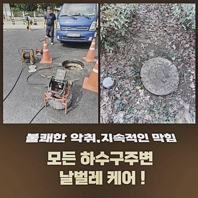
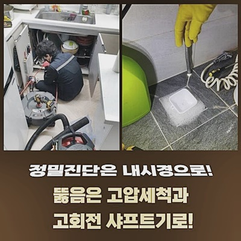
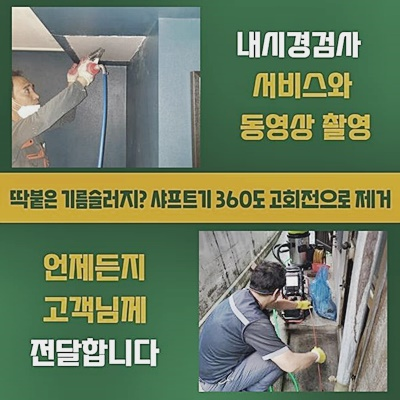
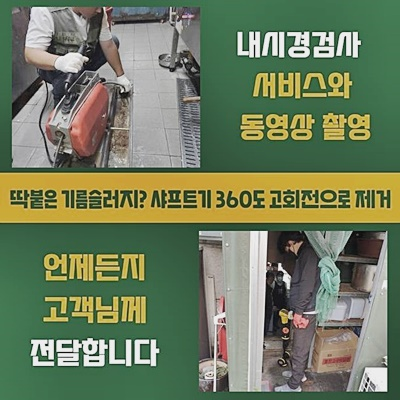
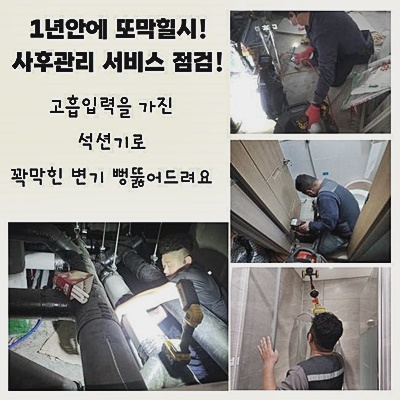
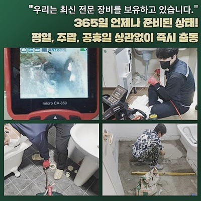

🏠 강동구 명일동싱크대배수구역류 암사동 배수로뚫기 누수
용인 싱크대막힘 전문 시공 후기

📋 작업 개요
- 위치: 용인
- 서비스 유형: 싱크대막힘, 하수구막힘, 배관막힘, 누수수리, 역류해결, 뚫는업체, 배관청소, 고압세척
- 작업 일시: 2024. 7. 30. 11:30
- 업체명: 하수구수사대 (010-5615-2118)
🔍 문제 상황
강동구 명일동싱크대배수구역류 암사동 배수로뚫기 누수
반가워요 의뢰자의 생활측면을 위협하고있는 하수관오류를 빠르고 완벽히 시정하는 배관 해결사입니다
지금부터 생활하시면서 집내부서 발생되는 배수장애와 관련해 설명드릴게요
어째서 위와같은 배수오류가 벌어지는걸까요?
이런 문제들로 대해 저희가 일러드리는 내용의 글로 적어보았어요
저희가 찾아갔던 장소에서는 배수오류가 발생되었을 시 대부분은 잠깐의 증세로 여겨 펄펄 끓고있는 물들을 붓는 등의 행동으로 증세를 없애려고 도전해보세요
기름이 쌓여서 생긴 증세라는걸 인지하고 실시했지만
안타깝게도 잠깐은 배수되다가 똑같이 막혀버림과 동시에 역류증상들도 발생되었는데요
그리하여 혼자선 안되겠다 느끼신 의뢰인분은 이를 고쳐내는 전문인을 찾으셨고 저희의 전문가는 안전하게 문제들을 해결하고자 했습니다
고객분의 요청에따라 한시간을 넘기지않고 당도했어요
배수구쪽으로 내려가지 않는걸 깨닫고서는 즉시 바닥주름관을 해체하고 안쪽을 점검해주었습니다
초입부터 고착된 음식잔해와 부유물들과 더불어 하수도의 입구부분에 남겨진 물들은 심층부까지 체크해야한다는걸 깨닫게 했는데요

🔎 원인 분석
💡 전문가 진단: 정밀 진단 장비를 사용하여 슬러지의 고착 여부를 판명하고 타격/세척 작업을 실시했습니다.
1차적으로 뛰어난 청소 능력을 대표하는 석션장비로 안측의 이물을 흡입했어요
잔해들이 올라왔으나 양상들을 보았더니 문제의 악영향을 미칠 양으로 보이지않았죠
해당 이유로 저희의경우엔 더 깊은 곳에 연유가 자리하고 있는것으로 추측하고서군데군데 정확하게 보여주는 내시경도구를 동원했는데요
깊이 내시경장치를 삽입하여문제의 원인과 어디 지점에 결함이 결집되어있는건지 살폈습니다
내시경장치의 이용이라 함은 점검해줄때만 중요한것이 아닌 청소들이 끝나고서 검수할때에 중요하게 쓰입니다
하수구 막힘 문제들을 없애려고 한다면, 적당한 도구들을 마련하고있는 업체들을 부르시는 것이 좋습니다
저희전문진은 앞서서 손을 놓은 장소로부터도 문의가 많은데요
간혹 경제적 지출로 인하여 간소한 자가조치들에 의지하는 분들도 계십니다
경제적 사안도 중요한 조건 중 하나지만 증상의 재발 확률을 고려해야하죠
방치기간이 길어지면 연결부분이 약해지면서 물이 뚝뚝 떨어지는것과 같이 더 큰 문제들을 불러일으킵니다
그렇기에 간소하게 해결이 될 수 있는지 내시경장비로.내시경기기로 정확하게 파악해주고 수리수순에 타겟을 두는게 첫번째인데 이럼으로써 괄목적이고 재발하지않고 청결하게 뚫는 작업이 이뤄진답니다
저희의경우엔 다양한 배수 관련 문제와 연관된 실력과 해결능력을 갖추고있는 전문가에요

🔧 작업 과정
의뢰자의 생활 양식을 깨끗하며 보건적이게끔 유지하시도록 노력을 기울여 서비스들을 지원합니다
결함들이 발생했다면 편하게 저희를 이용하여 상담을 진행해보세요!
방문드려 여러분들의 집을 원상복구시키고 문제가 없던 때로 되돌려놓을것을 장담합니다
내시경으로 깊숙한 부분을 체크하니 슬러지들로 오염이 심했던 상태로 보였어요
크기들이 컸기에 석션장치로 효과가 미미했던 기조를 인지했어요
구석구석 잔존하는 고착화된 덩어리들을 없애기위하여 샤프트기라 불리우는 기기들을 이용해주어야 했죠
이물질 분쇄를 운용하여 잔해물을 조그마하게 탈락시키고 석션장치로 청소해야해요
회전하면서 헤드부의 사슬들이 이물들을 쉽게 조심히 조절하여 분쇄해, 관로들을 청결하게 세척하는 기능을 담당해요
어느정도 분쇄시키고 단계를 중단한 채 살피니 샤프트 머리쪽 체인뭉치엔 다양한 오염원이 덕지덕지인 상태였어요
이런 모습을 보인다면 이물질의 누적상태가 지속되었다는것을 뜻하며 이물제거를 철저하게 이어나가야됨을 뜻합니다
지속적으로 내시경으로 현 상태를 체크해보고 뒤엉킨 잔해가 점성이 있는 대량인것을 목격하고 분쇄 현 상태를 실시했어요
석션기기로 음식물 오염물을 반복해서 흡입시켜 제거했으며 내측을 깨끗히 정리하였습니다
더군다나 딱딱해진 잔해물질이 가득하여 현 상태를 세심하게 반복했어요
이처럼 하수구 막힘 피해를 해결하고있는 저희 업체에서는, 문제가되는 잔해가 없어지도록 꾸준히 뚫는 현 상태를 거듭했어요
내시경장비로 내측이 복구된걸 확인했는데요
빠져 모이게된 잔해가 그 증거들이였어요
이것처럼 많은 양이 있는 상태였으면 문제들이 사라지지않아요
해당 이유로 슬러지들을 빈틈없이 없애도록 해주는것이 필요했고 일방적으로 석션기기만 해결들을 바라는건 일시적으로만 뚫리게되고 단기간에 증상들을 불러오게하는데요
청소된 모습을 내시경으로 체크했어도 이 이후에 수돗물을 받은 뒤 통수검열을 이어갔죠
이 과정들을 진행하며 배수관 물증상들이 발생되고 있진않나 꼼꼼히 체크해보았고 그로인해 이상없는채로 하수의 통수가 신속하게 진행되었어요


✅ 작업 완료
저희전문인은 배수장애 연유를 상세하게 관찰하고 고객의 집에 적당한 대응책을 수행한답니다
반복적으로 유사한 하수구 막힘 결함이 똑같이 나타나지 못하게 하수관을 말끔하게 세척했어요
하수구 내시경의 헤드부를 통하여 청소과정들과 세척하고 난 다음의 점검하는 과정에서도 고객분이 관찰할 수 있게 해드렸죠
이처럼 어려운 하수도가 막히게되는 증상에 직면하게되었을때 즉각 저희업체에게 연락주시면 되요
저희들은 의뢰자의 문제들을 빠르게 걷어내드리기위하여 모든 전문적인 접근과 해결능력을 동원할 능력을 갖추고있어요!



⚠️ 베란다 누수 및 방수 관리 방법
- ✅ 비가 많이 올 때 창틀 주변이나 아래층 천장에 얼룩이 생기는지 정기적으로 확인해 보세요.
- ✅ 우수관 주변 실리콘 마감이 들뜨거나 깨진 틈새가 있는지 손상 여부를 수시로 체크하세요.
- ✅ 베란다 바닥 타일의 줄눈(메지)이 소실되면 그 틈으로 물이 침투하여 누수가 유발됩니다.
- ✅ 누수 의심 증상 발견 시 방치하면 아래층 손실이 커지므로 즉시 전문가의 진단을 받으십시오.
💡 핵심 정리
- 확실한 장비 작업(내시경 점검 및 샤프트 스케일링)으로 원인을 뿌리 뽑습니다.
- 작업 후 1년 이내에 동일한 부위 재발 시 100% 무상 A/S 서비스를 보장합니다.
- 서울 · 경기 · 인천 전 지역에 24시간 언제든 긴급 출동할 수 있도록 항시 대기 중입니다.
❓ 자주 묻는 질문 (FAQ)
🚨 용인 싱크대막힘 문제로 고민이신가요?
정확한 원인 진단과 확실한 시공으로 재발 없는 해결을 약속드립니다.
24시간 긴급 출동 | 서울 · 경기 · 인천 전지역 | 1년 내 재발 시 무상 A/S